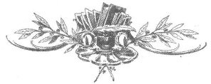

Bütün büyük hakikatler, kutsal şeylere küfür edilmesiyle ortaya çıkar.
GEORGE BERNARD SHAW
Tanrı, fikirlerimizi değil, onlara olan arzumuzu açıklamak için kullandığımız bir sözcüktür.
JOHN STUART MILL
Ateistler genelde dine küfreden insanlar olarak suçlanır, aslında böyle bir suç işlememişlerdir. Bir ateist, Tanrı'yı sorguladığında, kınadığında ya da yerdiğinde kişilerle değil, fikirlerle uğraşıyor demektir. Tanrı'yı aşağılama yetisine sahip değildir, çünkü böyle bir varlığın gerçekliğini reddetmektedir.
G.W. FOOTE
Tanrı fikrine, böyle abuk bir dünyadan onu sorumlu tutabileceğim için büyük saygı duyuyorum.
GEORGES DUHAMEL
Tanrılar insan yapımıdır ve hep de böyle olmuştur.
JOHN BURROUGHS
Çağdaş dünyanın bütün dinsel sorunlarının kaynağı, Kudüs'te bir Akıl Hastanesi bulunmayışıdır.
HAVELOCK ELLIS
Kolayca anlayamadığımız ne varsa ona tanrı deriz; bu da beyin dokularımızın aşınmasını ve bozulmasını önler.
EDWARD ABBEY
Kâfirlik, düşünce özgürlüğü için kullanılan bir başka sözcüktür.
GRAHAM GREENE
İman, şüphe etmektir.
EMILY DICKENSON

Hangi yaştan olursa olsun inançsızların büyük bir çoğunluğunun, saygı duyulan onurlu ve dürüst insanlar olduğu tarihsel bir gerçektir.
JOHN STUART MILL
Düşünen bütün insanlar ateisttir.
ERNEST HEMINGWAY
Bütün çocuklar ateisttir, tanrı fikri onlarda yoktur.
BARON D'HOLBACH
Bana kalırsa, hayatı yaşanılır kılmak için dinlere ihtiyaç olduğuna inanmak bir hatadır.
SINCLAIR LEWIS
Dini önemsiyorum, ama bir çocuk oyuncağı olarak,
Ortada günah falan da yok, yalnızca cehalet.
CHRISTOPHER MARLOWE
Tanrı varsa –sevecen bir Tanrı tabii– müthiş acımasız bir dünya yaratarak olağanüstü bir iş çıkardığının hakkını vermemiz gerekiyor.
DAVE MATTHEWS
DİNBİLİM: Bilinemeyecek olanı, bilinmeye değmeyecek terimlerle açıklama uğraşı.
H.L. MENCKEN
Evren kendi kendine çalışır ve doğanın sonsuz yasaları herhangi bir ilk nedene ya da marş motoruna ihtiyaç duymaz.
MARQUIS DE SADE
Şehitlik, bir insanın herhangi bir yeteneği olmadan şöhret olmasının tek yoludur.
GEORGE BERNARD SHAW
İddia ediyorum hepimiz ateistiz. Ben yalnızca, sizin inandıklarınızdan bir eksik tanrıya inanıyorum. Siz öteki tanrıları neden göz ardı ettiğinizi anladığınızda, benim de neden sizinkini göz ardı ettiğimi anlayacaksınız.
STEPHEN HENRY ROBERTS
Biraz tuhaf ve çelişkili yollarla olsa da ateistler, dini din görevlilerinden daha ciddiye alma eğilimindedir.
JONATHAN MILLER